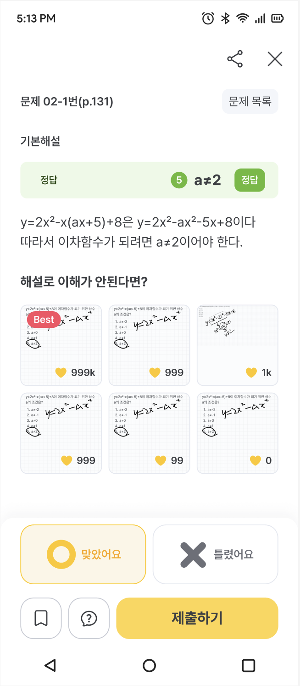
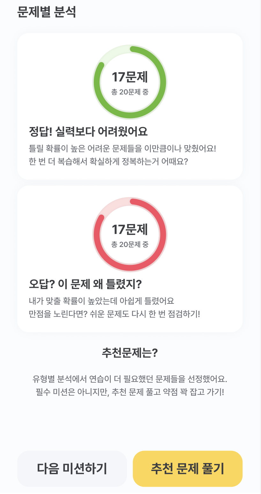

← 포트폴리오로 돌아가기
에그릿-개념원리 교재 연계 서비스 기획
태그
개념원리
간단 설명
교재 사용자를 앱 이용자로 전환하는 서비스 기획
프로젝트 기간
2023년 10월 2일 → 2024년 1월 15일
프로젝트 속성
행복을 주는 콘텐츠 기획
기획 기여도
50%
🗺 기획 배경
💡
아래 내용은 기획 당시의 의도를 정확히 보여드리고자 일부 재구성하여 작성하였습니다.
고객이 직면한 문제
개념원리 교재로만 공부하는 학생들은 본인의 정확한 실력을 측정하기 어려움
혼자서 수학(상), 수학1 개념원리 교재를 처음 공부하는 학생들은 함께 공부할 때 동기부여가 더 잘 될 것으로 추측
회사 내부의 문제
개념원리 교재를 쓰는 학생들을 앱 이용자로 전환 필요
개념원리 교재 문제를 앱에서도 똑같이 풀 수 있다면 교재의 판매량에 부정적인 영향을 줌
개념원리 교재에 직접 정답을 쓰는 유저 데이터를 앱 내에 기록하고 싶음
🧭 기획 목적 및 목표
기획 목적
개념원리 수학(상), 수학1 교재 문제 정오를 앱에 입력하는 학생에게 매력적인 분석 서비스를 제공하여 앱으로 학습하는 경험을 만들어준다.
개념원리 수학(상), 수학1을 공부하는 학생들이 함께 공부하고 있다는 느낌을 주는 서비스를 제작한다.
기획 목표
개념원리를 사용하는 고객을 앱 사용자로 전환하여 유저 교재 문제 풀이 내역을 데이터화
실시간성이 반영된 신규 커뮤니티 기능 제작
🏗 서비스 제작 과정
교재 연계 학습 서비스
효율적인 학습을 도와주는 커리큘럼 제작
고정된 문제 set인 교재 문제만으로는 정확한 분석을 하기 어렵기 때문에, 이전 학년/학기를 포함한 선수 개념 학습과 교재에 없는 추가 문제를 제공
수학(상)과 수학1 총 교재 네 권을 각각 30차시 커리큘럼으로 제작하였으며, 각 차시는 아래와 같은 형태로 구성
해당 차시와 관련 있는 선행 개념 리스트 화면 (선행 개념 중 모르는 개념은 영상과 개념카드를 열람할 수 있음)
교재 문제 정오를 체크하는 화면 (교재의 문제를 노출하지 않고 정답과 해설을 보며 빠르게 정오만 체크하는 방식)
추가 문제(교재 외 문제)를 푸는 화면 (차시 별 문항 수와 난이도를 고려하여 출제 문제 수 조정)
차시 결과 분석 + 추천 복습 문제 화면
차시별 상세 분석 페이지 기획
학생 실력과 문제 난이도를 비교하여 아래와 같이 특정 정오답 문항을 분류
찍어서 맞췄을 가능성이 있는 문제 (학생 실력보다 월등히 어려운 문제를 맞춘 경우)
실수로 틀렸을 가능성이 있는 문제 (학생 실력보다 월등히 쉬운 문제를 틀린 경우)
각 유형별로 교재 문제와 추가 문제 정오 여부에 따라 아래와 같이 학생을 그룹화하여 추천 복습 로직 설계
교재 문제 정답률 100% ❌ + 추가 문제 정답률 100% ⭕
교재 문제 정답률 100% ⭕ + 추가 문제 정답률 100% ❌
교재 문제 정답률 100% ❌ + 추가 문제 정답률 100% ❌
🚀 결과물 및 목표 달성 여부
결과물
교재 문제 정오 - 빠른 정답 및 해설

상세 분석 페이지

목표 관련 참고 데이터
서비스 오픈 후 20일 기준
교재 별 중복 포함 총 675명 이용
36,500여 풀이 데이터 확보